# The Anatomy of the Middle and Inner Ear Will Styler - LIGN 113 --- ### Today's Plan - The Middle Ear - The Vestibular System - The Cochlea --- ## The Middle Ear --- ### The Outer Ear ends at the TM 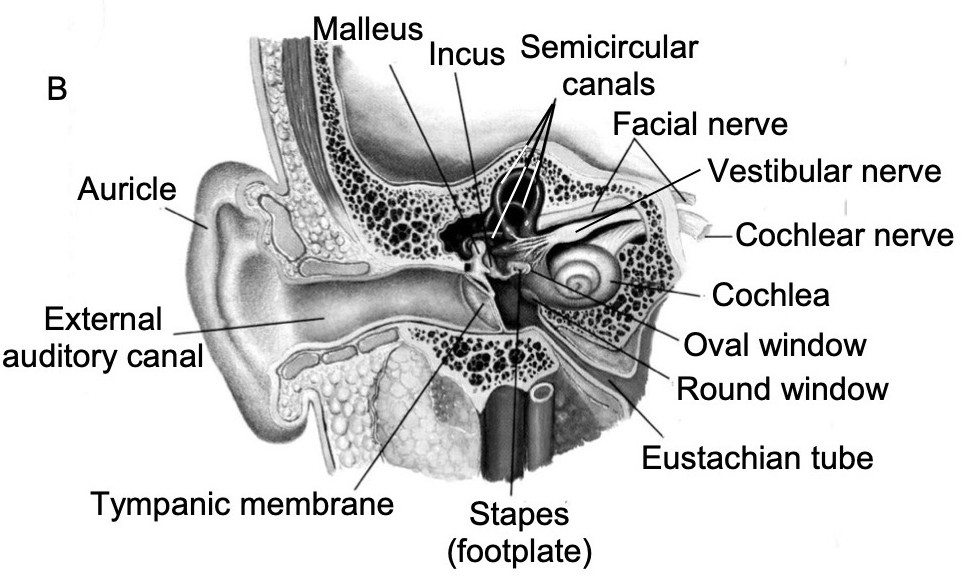 --- 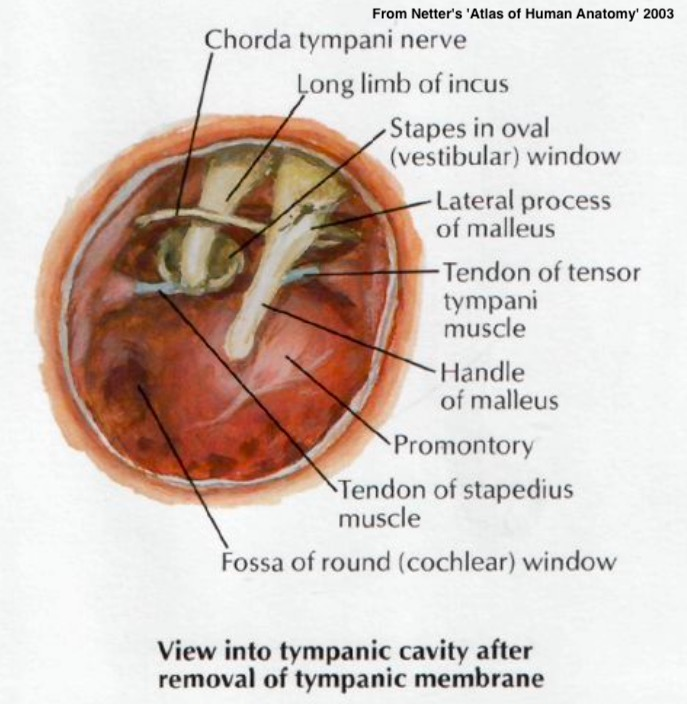 --- ### The Middle Ear 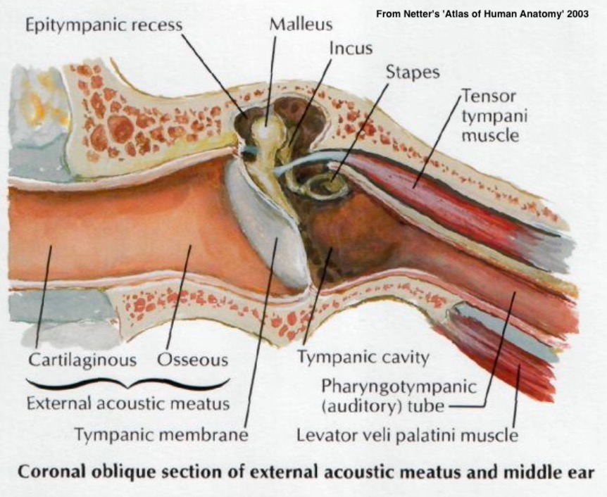 --- ### The Eustachian Tubes --- 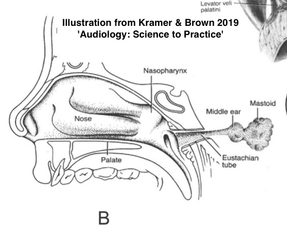 --- 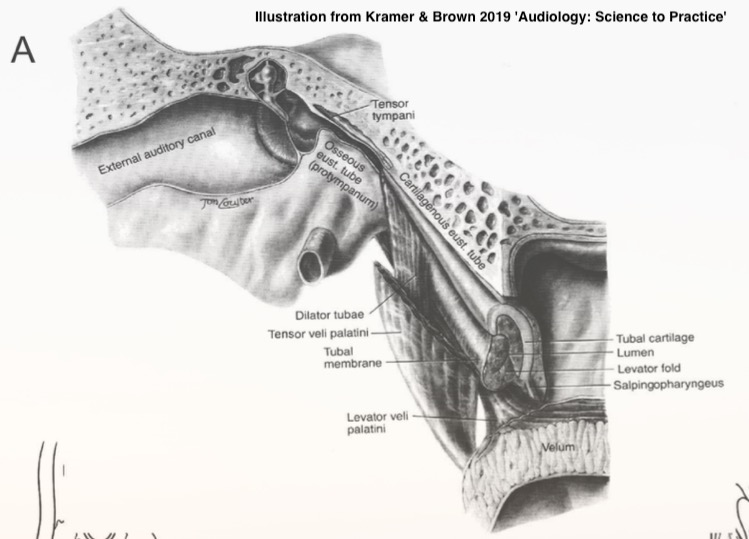 --- ### The Eustachian Tubes - a.k.a 'Auditory Tube', 'Pharyngotympanic tube' - Serve to regulate pressure inside the middle ear - Allowing release of vaccuum and pressure in both directions - Not always open! - Opened by the tensor and levator veli palatini - Otherwise, you'd hear your nasopharynx more! - Contains a bony and cartilaginous portion --- <img class="r-stretch" src="hearing/middleear_medial.jpg"> --- ### The Ossicular Chain --- ### Comprised of three bones - Malleus ('Hammer') - Incus ('Anvil') - Stapes ('Stirrup') - Suspended by ligaments and muscles --- 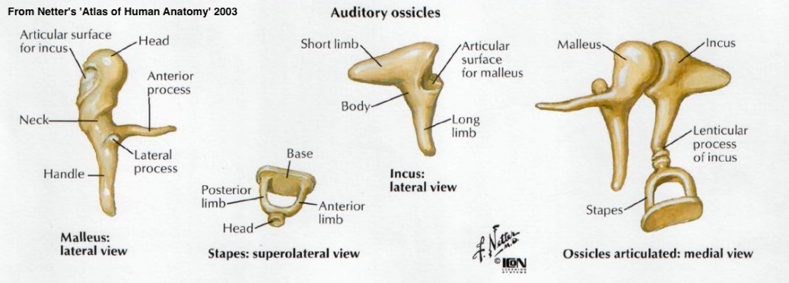 --- ### The Ossicular Chain connects the TM to the cochlea - TM is attached to the malleus - Malleus to incus to stapes - via little tiny joints - Stapes to the Oval window - Ligaments serve to support the ossicles within the middle ear - ... and allow them to pivot --- --- 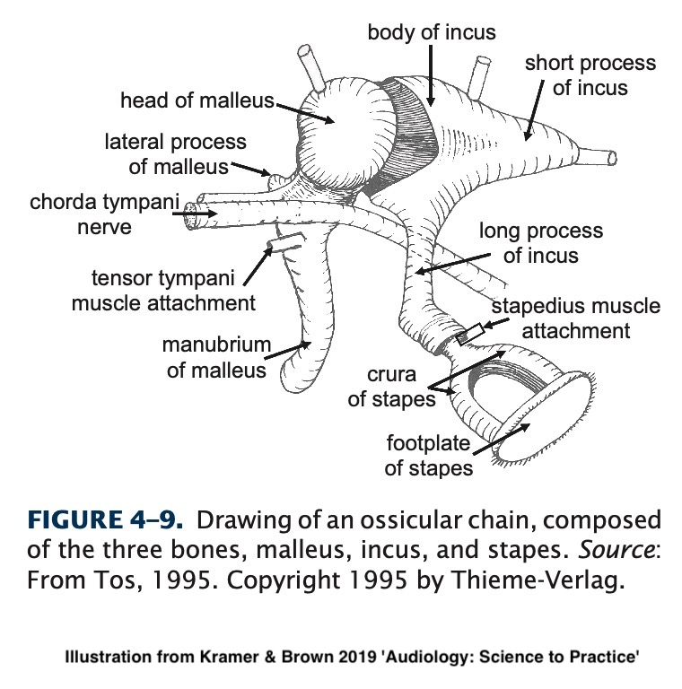 --- ### The Ossicles serve four important roles - They promote the acoustic reflex - They amplify the acoustic signal - They match the impedance between (external) air and (cochlear) fluid - They protect the cochlea --- ### The Acoustic Reflex - Tightening the *stapedius* and *tensor tympani* muscles dampens the vibration of the ossicles - This happens in (delayed) response to loud noises and our own speech - More on this later! --- ### Enabling the acoustic reflex --- ### Signal Amplification and Impedance Matching --- ### Impedance Matching and Amplification - Shrinking from TM to stapes increases force and improves *transduction* - Movement of bones matches the impedance - We wouldn't want the TM to be on the side of the cochlea --- ## Protecting the Cochlea --- ### The Ossicular chain can be injured - Usually from head injury, TM perforation, or pressure - Massive 'conductive' hearing loss - Usually at the incus-stapes joint - Sometimes at the incus-malleus joint - An intact stapes usually means better outcomes --- ### This is a feature, not a bug! - Better to injure the ossicles than cochlea! - They can heal and repair, often - [Prosthetic ossicles](http://www.gracemedical.com/products/ossicular-prostheses/) are a thing! --- 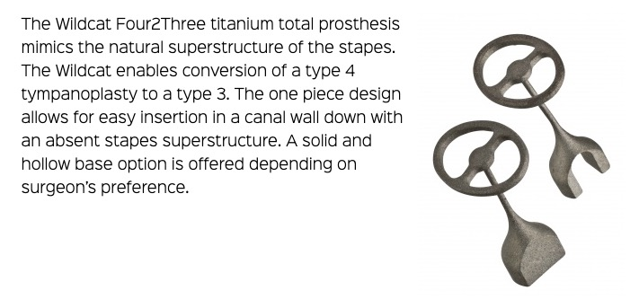 --- 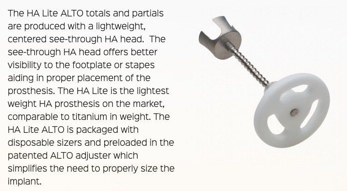 --- ### The Chorda Tympani Nerve --- ### The Chorda Tympani Nerve - Carries tongue sensation, among other things - One more reason you want your ear drums intact, thanks --- ### That's the middle ear! - The ossicular chain - The musculature involved in the acoustic reflex - The Eustachian tubes --- <img class="r-stretch" src="humorimg/deeper.jpg"> --- --- ### The 'Inner Ear' - Comprised of the bony cavities within the temporal bone - The 'bony labyrinth' - Contains the cochlea and the vestibular system - These structures are tiny - [The Cochlea averages about 9mm long and 5mm high](https://link.springer.com/article/10.1007/s00330-005-2750-9) --- 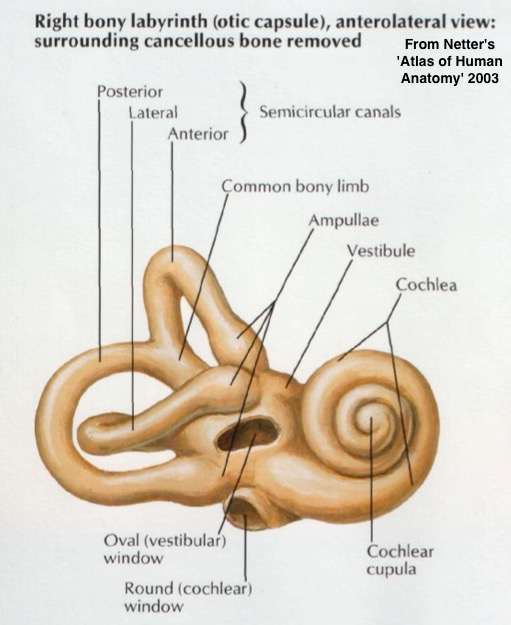 --- 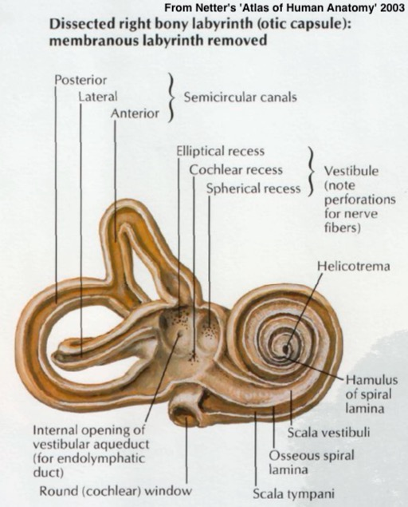 --- ### The Vestibular System - Dedicated to balance and orientation - Includes both semicircular canals - Filled with fluid and a method of detecting movement of that fluid --- --- ### More on this later! --- ## The Cochlea --- --- --- 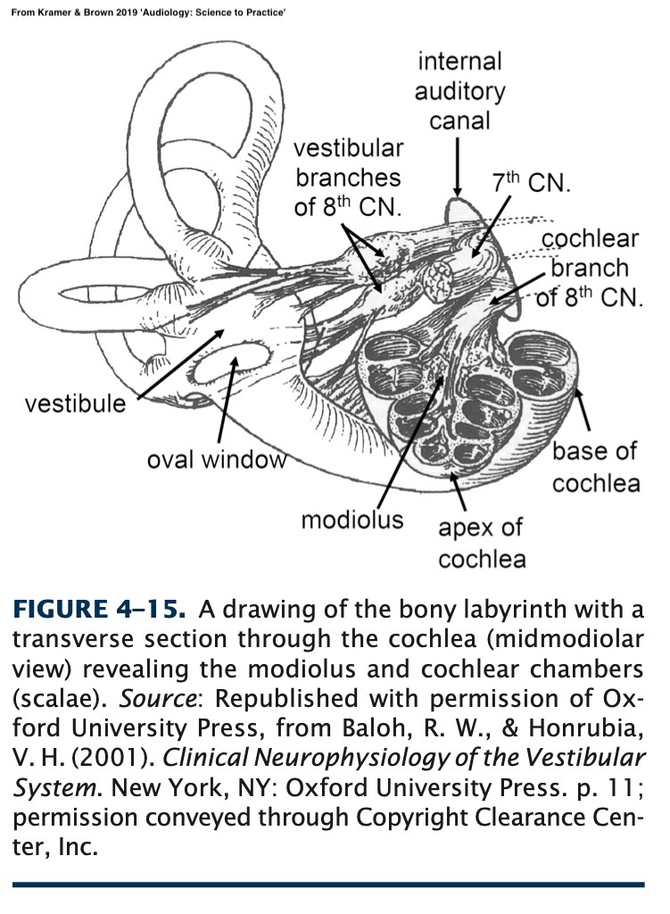 --- 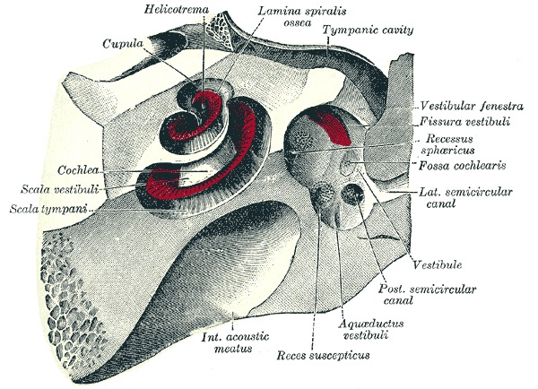 --- ### The Cochlea is a coiled tube - About 2 3/4 turns - Uncoiled it'd be ~35mm - That's 1.378" in 'Murica - We talk about the 'base' and 'apex' of the cochlea - The base is the widest part, the apex is the narrowest --- --- ### The interior of the tube is complex - There are three 'cavities' within the tube - The Scala Vestibuli - The Scala Media (also 'cochlear duct') - The Scala Tympani - The 'tympani' here refers to the round window - Not the tympanic membrane --- --- <img class="r-stretch" src="hearing/cochlea_cross.jpg"> --- ### These cavities are filled with fluid - 'Perilymph' in the Scalas Vestibuli and Tympani - 'Peri' like periphery, outside - 'Endolymph' in the Scala Media - 'Endo' like 'endonym', inside - **The fact that there are two different fluids is super important later on** --- ### Connections within the cochlea - The Scala Tympani and Scala Vestibuli meet at the *helicotrema* - The Scala Media terminates at the helicotrema --- ### The Scala Tympani and Vestibuli are continuous - You could swim from the oval window to the round window - Push off the oval window, up the Vestibuli, to the Helicotrema, down the Tympani, down to the round window - The Scala media terminates at the helicotrema --- 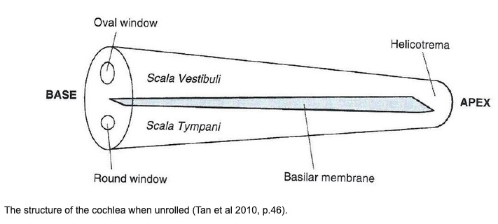 --- ### The Round and Oval Windows are both needed - The round window pushes out when the oval window (stapes) pushes in --- ### Cochlea-internal landmarks --- ### Reissner's Membrane (also called the 'Vestibular Membrane') <img class="r-stretch" src="hearing/cochlea_cross.jpg"> --- ### The Basilar Membrane <img class="r-stretch" src="hearing/cochlea_cross.jpg"> --- ### Basilar Membrane (think 'base of the organ of corti') - This is the surface which sound is able to deflect - Stiffer at the base, more flexible at the apex - Different areas respond to different frequencies - This is called 'tonotopic organization' - Pressure waves cause basilar membrane displacement --- --- 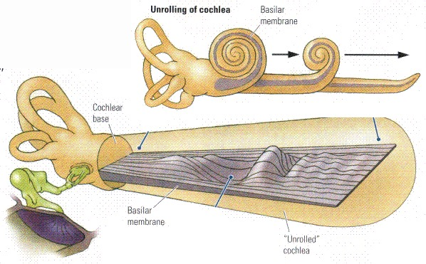 --- <img class="r-stretch" src="hearing/basilar_frequencies.jpg"> --- ### Lots more on tonotopic organization later! --- ### So, the basilar membrane vibrates in different places depending on frequency of input - ... but how do we pick that up? --- ### The Organ of Corti! <img class="r-stretch" src="hearing/cochlea_cross.jpg"> --- ### Key takeaways - The Middle Ear gets sound from the TM to the Oval Window - The inner ear is a cavity within the temporal bone - It contains the vestibular loops and the cochlea - Cochlea is a spiraling wonderland of different cavities - The basilar membrane moves with sound - The Vibrations are picked up by the Organ of Corti! --- ### Next time - We're gonna corti like it's 1999 --- <huge>Thank you!</huge>